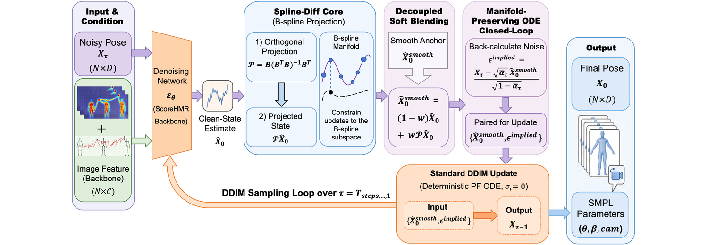

SplineHMR: A Universal B-spline Prior for Temporally Stable SMPL Refinement
The paper has been accepted to ACM Multimedia 2026. The ACM DL page is not live yet; DOI assigned: 10.1145/3767308.3835749.
TL;DR
- SplineHMR refines existing HMR sequences by representing pose and camera corrections as smooth B-spline trajectories.
- Spline-Opt performs direct test-time optimization in the B-spline control space for better image alignment with less jitter.
- Spline-Diff plugs the same B-spline prior into ScoreHMR's diffusion sampling process, making diffusion-based refinement more temporally stable.

Abstract
SplineHMR is a representation-level temporal prior for refining human mesh recovery results from monocular videos. Test-time refinement is often useful for improving 2D alignment, but frame-wise optimization can introduce unnatural temporal jitter. We address this by constraining the refinement updates to a low-dimensional B-spline trajectory subspace.
Given an input motion sequence, SplineHMR optimizes or samples smooth control-point trajectories and decodes them into dense per-frame corrections for body pose and camera parameters. The prior is independent of a particular HMR backbone, making it easy to attach to different refinement pipelines. In this work we instantiate it as Spline-Opt for optimization-based refinement and Spline-Diff for diffusion-based refinement.
Demo
The demo starts from precomputed SMPL-X results and refines the sequence with Spline-Opt. Red shows the input mesh before refinement; green shows the optimized mesh. The overlay highlights that the refined result improves alignment while preserving coherent temporal motion.

Method
The central design is simple: expose B-spline control points to the refinement algorithm instead of independent frame-wise variables. Since neighboring frames share the same control points, the output corrections are naturally smooth, but still flexible enough to follow image evidence.

Spline-Opt
Spline-Opt performs LBFGS refinement over B-spline control points. It is lightweight at inference time and works directly on an existing motion estimate, such as the precomputed SMPL-X sequence used in our demo.
Spline-Diff
Spline-Diff applies B-spline projection during ScoreHMR sampling. Instead of treating sampled clean states as independent frames, it projects them toward a temporally structured subspace and blends the projected result back into the DDIM loop.


Qualitative Results
SplineHMR is designed for the alignment-stability trade-off: it should improve the fit to visual evidence without causing frame-to-frame artifacts. The qualitative comparison below shows representative fitting results from the paper.

Video
Citation
If you find SplineHMR useful, please cite:
@inproceedings{li2026splinehmr,
title = {SplineHMR: A Universal B-spline Prior for Temporally Stable SMPL Refinement},
author = {Li, Tengwei and Li, Jiaen and Zhang, He and Yu, Tao and Ji, Mengqi},
booktitle = {Proceedings of the 34th ACM International Conference on Multimedia (MM '26)},
year = {2026},
address = {Rio de Janeiro, Brazil},
publisher = {Association for Computing Machinery},
doi = {10.1145/3767308.3835749},
isbn = {979-8-4007-2213-4/2026/11}
}